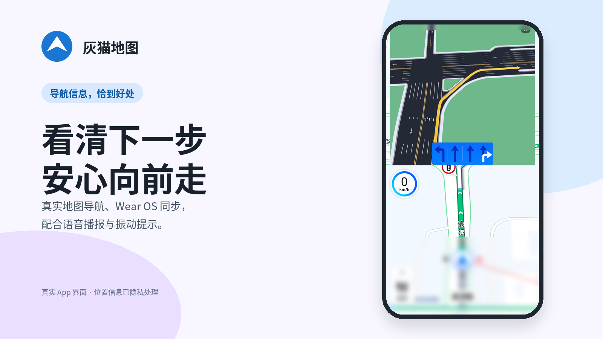

Mapas e navegação
Huimao Map
Localização, busca de lugares, rotas, navegação integrada, atalhos de casa/trabalho, envio de localização WeChat e suporte básico ao Wear OS.

HUIMAO · ANDROID
Quatro utilitários Android: navegação, consulta de dados públicos, gestão do veículo e notificações melhores. Você mantém o controle.
AplicativosMapas e navegação
Localização, busca de lugares, rotas, navegação integrada, atalhos de casa/trabalho, envio de localização WeChat e suporte básico ao Wear OS.

Consulta de dados públicos
Consulta informações públicas de IP, telefones e nomes de usuário. Os resultados dependem de fontes públicas.

Gestão do veículo
Organiza veículo, manutenção, despesas, viagens, diagnóstico OBD-II e backups opcionais.

Notificações locais aprimoradas
Agrupa notificações WeChat em conversas MessagingStyle compatíveis com Android Auto. O histórico criptografado vem desligado.

Huimao é um desenvolvedor independente focado em aplicativos Android práticos e bem projetados.
GitHub ↗PRIVACY BY CHOICE
Configurações e registros permanecem no aparelho sempre que possível.
Permissões são pedidas apenas para funções específicas e podem ser revogadas no Android.
Quando outro serviço é necessário, informamos o fornecedor e a finalidade.